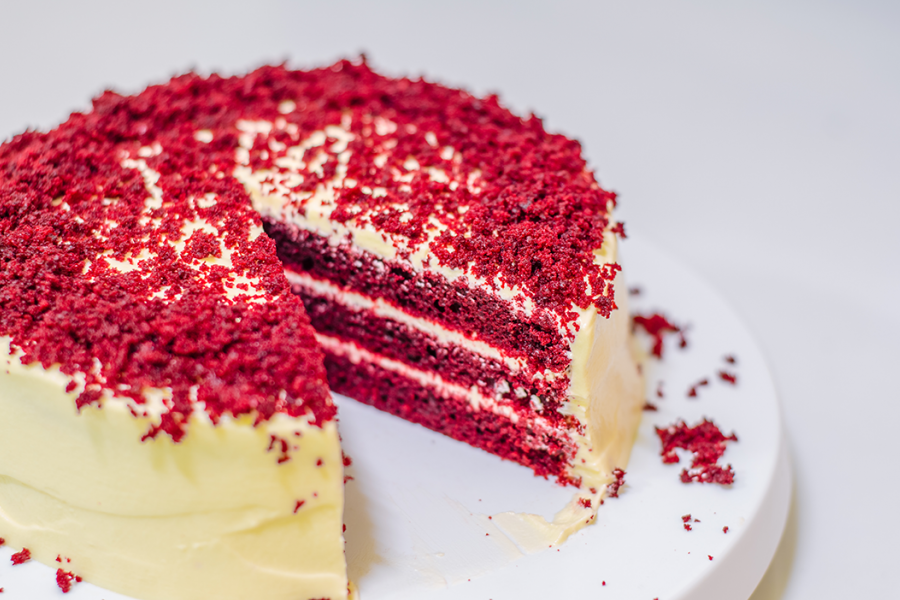

Bolo delicioso de
Red Velvet
Ingredientes
Massa
- 2 ovos
- 100g de manteiga sem sal amolecida
- 1 colher de sopa de vinagre branco
- 4 colheres de corante alimenticio líquido cor vermelha
- 5 colheres(sopa) de suco de limão
- 2 xícaras de açucar refinado
- 3 xiícaras de farinha de trigo
- 1 colher de cacau em pó(não pode ser achocolatado)
- 1 colher de sal
- 1 colher de bicarbonato de sódio
- 1 colher de fermento em pó
- 200ml de leite
Cobertura e Recheio
- 100 g de manteiga sem sal amolecida
- 300 g de cream cheese
- 200 g de chocolate branco derretido
- 300 g de açúcar (de preferência o de confeiteiro)
- 1 colher (sopa) essência de baunilha
Opcional você também pode fazer a cobertura/recheio buttercream com 200 g de manteiga sem sal
em temperatura ambiente, 150 g de açúcar confeiteiro e 1 colher (chá) de essência de baunilha.
Modo de Preparo
Massa
- Em um recipiente, misture 200 ml de leite
com 1 colher (sopa) de suco de limão e reserve por 10 minutos.
- Em uma outra tigela, misture os ingredientes secos
(a farinha de trigo, açúcar refinado, cacau em pó, sal, bicarbonato de sódio e fermento em pó) até ficar homogêneo e reserve.
- Em uma batedeira, na velocidade média, bata por 10 minutos a manteiga,
ovos, vinagre branco, essência de baunilha, corante alimentício vermelho e as 5 colheres de suco de limão.
- Ainda na batedeira, intercale a mistura seca e a mistura do leite com o limão, adicionando-os à massa formada, e bata por mais 5 minutos até formar uma massa bem cremosa.
- Em forno preaquecido a 180º C, unte 2
tabuleiros redondos de 20 cm de diâmetro (afinal serão 2 camadas de massa + recheio), divida a massa entre os 2 tabuleiros e asse por aproximadamente 20 a 40 minuto.
- Após 20 minutos, verifique se a massa
está assada, perfurando o bolo com uma faca ou um palito. Se sair limpo, a massa estará pronta.
- Quando a massa estiver pronta, retire do forno
e deixe esfriar antes de desenformar.
Coberta e Recheio
- Em uma batedeira, bata por 10 minutos em velocidade média
a manteiga sem sal amolecida, o cream cheese, o chocolate branco derretido,
açúcar de confeiteiro e essência de baunilha.
- Quando formar uma mistura bem fofa e cremosa, reserve.
opcional: no caso da cobertura/recheio buttercream, bata a manteiga até ficar homogênea,
acrescente o açúcar e a essência, e reserve.
Montagem
- Desenforme os bolos e corte-os ao meio, formando 4 camadas.
- Para cada camada, adicione o recheio até chegar a última camada.
- Em seguida, utilize uma espátula de confeiteiro como auxílio e decore
todo o bolo com o restante da cobertura, adicionando e confeitando com confeitos de sua preferência
(frutas vermelhas ou nozes, por exemplo).
- Você pode servir gelado ou não; se preferir, deixe na geladeira por
10 minutos depois de pronto.
